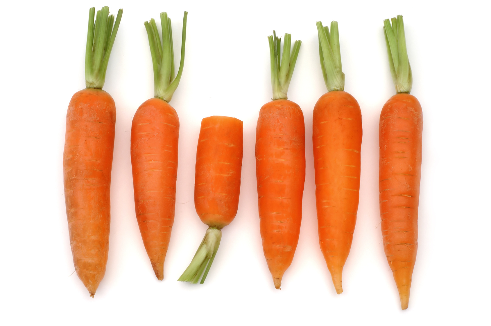

Légumes
Un légume est la partie comestible d'une plante potagère. Cette définition, reprise par la
plupart des dictionnaires de langue française, doit être étendue aux champignons comestibles,
dont certains sont cultivés (champignon de Paris, shii-také, etc.) et à certaines algues, dont
la consommation est la plus développée en Extrême-Orient. Cette partie peut être une racine
(carotte), une tige (céleri), une feuille (laitue), une fleur (artichaut), un fruit (poivron),
un bulbe (oignon), un tubercule (pomme de terre) ou une graine (maïs).
Étymologie
Le terme légume est attesté en français depuis 1531 selon le Robert historique et vient du latin
legumen, plante à gousse. Féminin à son origine, il a d'abord désigné les graines de
légumineuses et de céréales anciennement la base de l'alimentation végétale.
Poireau

Le poireau
est un terme qui désigne plusieurs plantes du genre Allium dont Allium polyanthum, le poireau de
vigne. Cependant, la plupart du temps, c'est du poireau cultivé, Allium porrum, dont il est
question. Cet article ne traite que de ce dernier. Le poireau commun est donc une plante
herbacée bisannuelle de la famille des Liliacées, largement cultivée comme plante potagère pour
ses feuilles (pseudo-tiges) consommées comme légumes.
Carotte

La carotte
(Daucus carota) est une plante bisannuelle de la famille des Apiacées (anciennement
ombellifères), largement cultivée pour sa racine pivotante charnue, comestible, de couleur
généralement orangée, consommée comme légume. Le terme «carotte» désigne aussi ce légume. C'est
un légume riche en carotène. La carotte est un tubercule d'hypocotyle, c'est-à-dire un tubercule
formé en partie par l'hypocotyle et en partie par la région supérieure de la racine, et qui
s'est tubérisé.
Brocoli

Le brocoli
(Brassica oleracea var. italica) est une variété de chou originaire du sud de l'Italie. Il fut
sélectionné par les Romains à partir du chou sauvage. Ceux-ci l'appréciaient beaucoup, et la
cuisine italienne l'utilise beaucoup. Il fut introduit en France par Catherine de Médicis.
Le brocoli présente une tige centrale ferme ramifiée en petits bouquets qui, à la floraison,
sont parsemés de minuscules fleurs jaunes. On le cueille avant l'éclosion de ses fleurs jaunes.
Le mot « brocoli » est dérivé du latin bracchium signifiant « branche », en référence à la forme
du légume qui fait penser à des arbres miniatures. Habituellement de couleur vert foncé à vert
sauge, le brocoli peut aussi être blanc ou pourpre (violacé).
Courgette

La courgette
est une plante de la famille des Cucurbitaceae. Le terme désigne un ensemble de cultivars de
l'espèce Cucurbita pepo, et de la sous-espèce Cucurbita pepo ssp. pepo (dont fait partie aussi
la citrouille véritable). Au Québec on la nomme généralement zucchini, du genre masculin, qui
est un emprunt de l’italien.